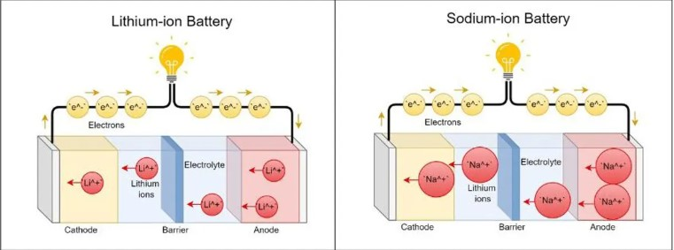

1.Batterie ion Na
2.Comment elle fonctionne
3.Different composant et leurs fonctionnement
4.Qui sommes nous ?
Comment ça marche ? Dans une batterie sodium-ion, il y a deux parties principales : une anode (électrode négative) et une cathode (électrode positive), séparées par un liquide appelé électrolyte. Quand la batterie charge ou se décharge, des ions de sodium (des atomes de sodium chargés électriquement) se déplacent entre l’anode et la cathode. Ce mouvement crée un courant électrique qui permet de faire fonctionner des appareils.
Les batteries au lithium et au sodium sont deux types de technologies de stockage d'énergie qui diffèrent sur plusieurs points essentiels. Tout d'abord, les batteries au lithium-ion utilisent le lithium comme matériau principal pour les électrodes, ce qui permet une densité énergétique élevée et une capacité de stockage d'énergie importante dans un espace réduit. En revanche, les batteries au sodium-ion utilisent du sodium, un matériau plus abondant et moins coûteux, ce qui les rend plus économiques et potentiellement plus durables. En termes de performance, les batteries lithium-ion sont plus efficaces avec une meilleure densité énergétique, ce qui les rend idéales pour des appareils tels que les smartphones, les ordinateurs portables ou les véhicules électriques. Les batteries sodium-ion, quant à elles, ont une densité énergétique inférieure, mais des progrès dans cette technologie visent à combler cet écart. Le sodium étant un matériau abondant, les batteries sodium-ion sont moins coûteuses à produire et présentent un intérêt pour des solutions à grande échelle, notamment dans les systèmes de stockage d'énergie pour les réseaux électriques. Concernant la sécurité, les batteries sodium-ion sont généralement considérées comme plus sûres que les batteries lithium-ion, car le sodium est moins réactif que le lithium, réduisant ainsi les risques d'incendie ou d'explosion. Par ailleurs, les batteries sodium-ion présentent une bonne durabilité et une résistance accrue aux dommages, bien qu'elles ne soient pas encore aussi matures que leurs homologues au lithium. En ce qui concerne la durée de vie, les batteries lithium-ion sont réputées pour leur longévité, bien qu'elles puissent voir leurs performances se dégrader au fil des cycles de charge. Les batteries sodium-ion, encore en développement, montrent des signes prometteurs de durabilité, avec une performance stable sur plusieurs cycles. Enfin, les batteries lithium-ion dominent actuellement le marché pour des applications nécessitant une haute densité énergétique, tandis que les batteries sodium-ion sont principalement envisagées pour des applications de stockage d'énergie à grande échelle, notamment pour les énergies renouvelables et les réseaux électriques.
